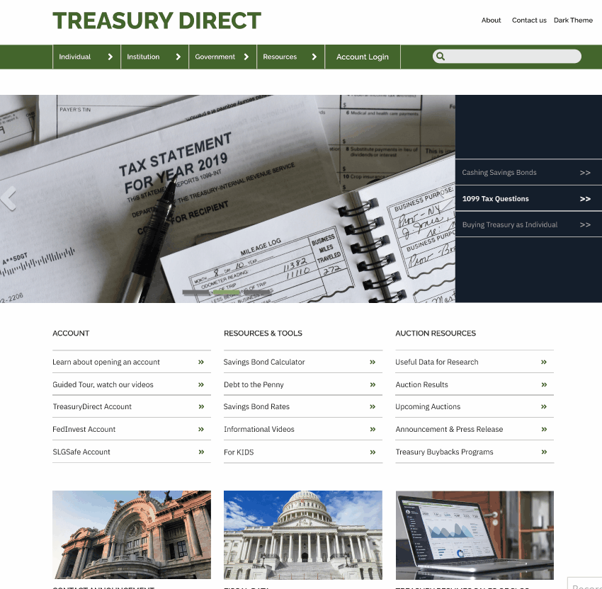

The Problem
The current web page is a cluster of links, titles and paragraphs, along with unnappealing themes, colors, layouts, links and buttons that may cause the user to give up quickly. Either way, this website gives an uncomfortable experience regardless of the user's understanding of the content.
Step 1
Using Figma, our team chose three pages to Red-Line and Annotate, helping us pinpoint which areas needed the most attention. We then created a spreadsheet, or Heuristic Evaluation, using Microsoft Excel, to combine our data and create a hierarchy of problems so that we could prioritize. The pages chosen were the Home Page (shown here), the Individual Page, and the Research Center. Each page was spearheaded by one team member, although we all collaborated on every aspect of the website.


Step 2
Using Figma again, we brainstormed with sticky notes of attributes for potential users and stacking them into categories. We came to the conclusion that demographics would most likely include an adult male looking for financial and tax related knowledge. Conducting this activity helped us visualize who would be looking into the website, though, it was important for us to not get hung up on one kind of user.
Step 3
After constructing the Proto Persona, we engaged in an activity called Card Sorting. Here we collaborated with an outside user that we thought may fit the Proto Persona description. Using sticky notes in Figma, we set up categories that represented navigation tabs and cards that represented sub-categories and topics based off the current website. We then had our user sort the cards into the categories they saw fit. This helped our team understand what a user expects while navigating the website.


Step 4
When designing a prototype, it's important to set up a user path to demonstrate the functionality of the website. Using our three pages, we decided that a user's reasoning might bring them from the home page to the Individual tab first, and then possibly the Research Center page assuming they spend more time on the website looking for more information.
Step 5
With the information gathered relative to user experience, it was time to create a tangible outline for our prototype. To do this, we created a wireframe using Figma. Here we established the main layout of our three pages (Home Page shown here), the elements of the nav bar and footer, and various bodily functions.


Step 6
This step was all about creating a theme. After creating individual moodboards, we came together as a team and created a UI style tile containing suggested color schemes, typography, icons, photos and button appearances.
Step 7
Now it was time to upgrade our wireframe to include our newly found theme. In our mid-fidelity prototype, we added our main "money green" theme to the nav bar and drop down menu, as well as to our Treasury Direct logo. We also established image place holders and cemented the footer with a grey background and list-like display of items.
Step 8
We conducted user testing to see how our page impressed so far.
Step 5
With the information gathered relative to user experience, it was time to create a tangible outline for our prototype. To do this, we created a wireframe using Figma. Here we established the main layout of our three pages, the elements of the nav bar and footer, and various bodily functions.
Final Prototype
Adjustments were made.
The "Research Center" page below is a page that I personally worked on.
New Web Page

Conclusion
In our usability tests of the original site, users were overwhelmed by the amount of information on the homepage. In our redesign of the homepage, we kept much of the information from the original but we organized it in a more simplified way. The fact that users in our last test felt less overwhelmed indicates that organization and design plays a major role is users reactions to being presented with lots of information. One factor that did not change between tests is the users comfortability with the subject matter. The lack of knowledge about investing in securities made users still slightly uncomfortable navigating the site. Throughout this project, our team worked hard to organize the extensive content on the site in a more simplified way. All the while, struggling with the subject matter as well. However, our final user tests revealed we accomplished our goal in redesigning our site to make it look like a user-friendly, legitimate government site.